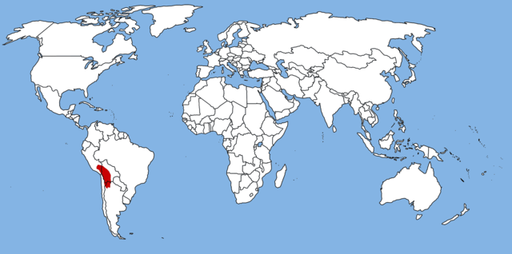

ALPACA LOVER
SURI

ABOUT SURI
Suri alpacas are rare and make up only 5% of the worlds alpaca population. Out of 37,000 Alpacas registered in the UK, there are only 2,000 Suris. They are genetically dominant (so if you cross breed a pure Suri with a Huacaya you end up with a Suri). Rather than the Teddy bear style bright, crimpy fleece of the Huacaya (pronounced Wuh-kai-ya), the Suri has a long hanging, dreadlock type lustrous fleece that hangs close to the body and moves freely. It is fine and dense, greasy in feeling and cool to the touch. The Suri fleece is also one of the most desirable fibres in the world and is heavily used by Italian fashion houses as high fashion fabric for designer clothing, luxury apparel, coats, sweaters and specialty interior fabrics and textiles.
The Suri Fleece hangs close to the body, moves freely and gives the Alpaca a lustrous and flat-sided appearance. The fleece should start locking at the head, which should run down the neck, across the body and down the legs all the way to the toes. The primary sign of quality in a Suri is lustre but the animal should also have a fine and dense, greasy feeling fleece which should be cool to the touch. There are four acceptable styles of lock in a Suri fleece but the locks should start at the skin, be compact and independent. Spirals in the lock can twist to either left or right and can be with or without a wave and should hang straight and hug the body. When opened up the inside locks should be as well formed as the outside and should have lustre right to the base.
SCIENTIFIC NAME: Vicugna pacos
DIET: Herbivore
RANGE: South America
HABITAT: Mountains, Urban Areas
VIEWING HINTS: Peru is the origin of alpaca. Suri alpaca is available there too!
WHERE THEY LIVE?
The alpaca originated from Peru. They were thought to be domesticated by the Indians of the Andes Mountains. They live in the high mountain foot hills.
Now Vicunga pacos can be found all over South America in Bolivia, Ecuador, and Chile. Because they have been imported for their fleece they can be found in the United States, the United Kingdom, and Australia. They are found all over, because they live on alpaca farms. They are kept as pets and also for their fleece.
Who lives around the alpacas?
There is not a lot of diversity where the alpacas live because of the fact that there is not a lot of oxygen in the high elevations. They live near flamingos, condors, spectaced bears, mountain lions, coyotes, llamas, and sheep. Sometimes alpacas, llamas, and sheep graze together in herds in South America. They all occupy different niches of the habitat. Llamas had the greatest eating rate, second is alpacas, and lastly is sheep. Llamas tend to eat tall, coarse bunchgrasses and low-growing grasses. While Alpacas and sheep tended to graze on low-growing grasses and forbs.